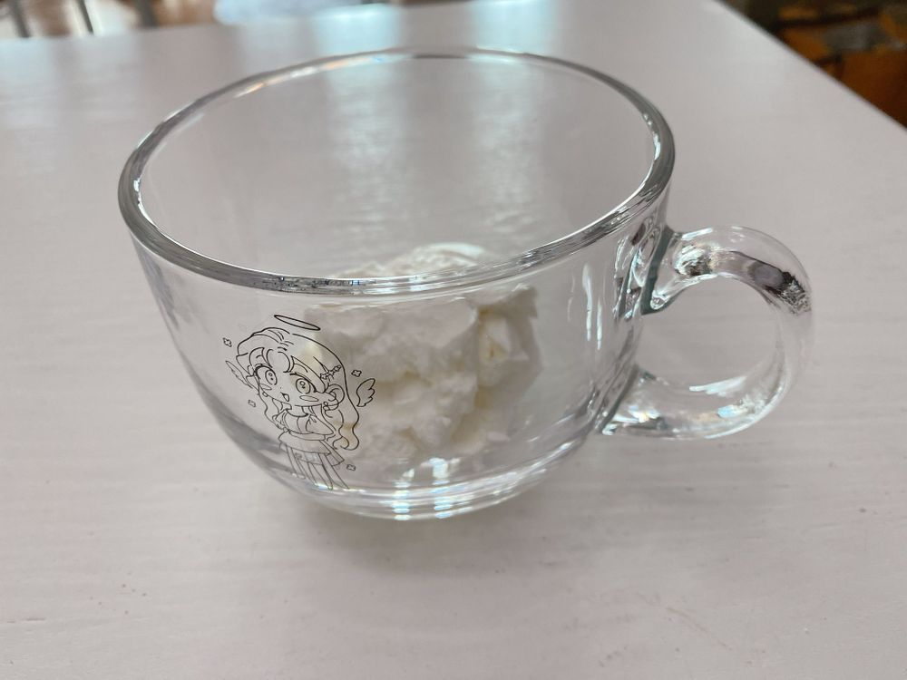

아까 눈 그친 줄 알았는데 엄청 많이 와서
깜짝 놀랐네...🙄
너무 추워서 방금 춤 추고 왔어ㅎ
땀은 여전히 안 났지만 몸은 따뜻해졌어☺️
눈길 조심해🥲
저녁은 먹었나~?
난 나의 아저씨 최종회 보면서 밥 먹어야겠다!!!
그리고 지금 또 요거트 만들고 있어😊힣
근데 1L 우유로 만들어도
유청 빼면 2번 밖에 못 먹는 정도의 양이야...
열심히 만들어도
2번밖에 못 먹는게 진짜 슬퍼ㅜ
그냥....
사서 먹는게 나?🥲
